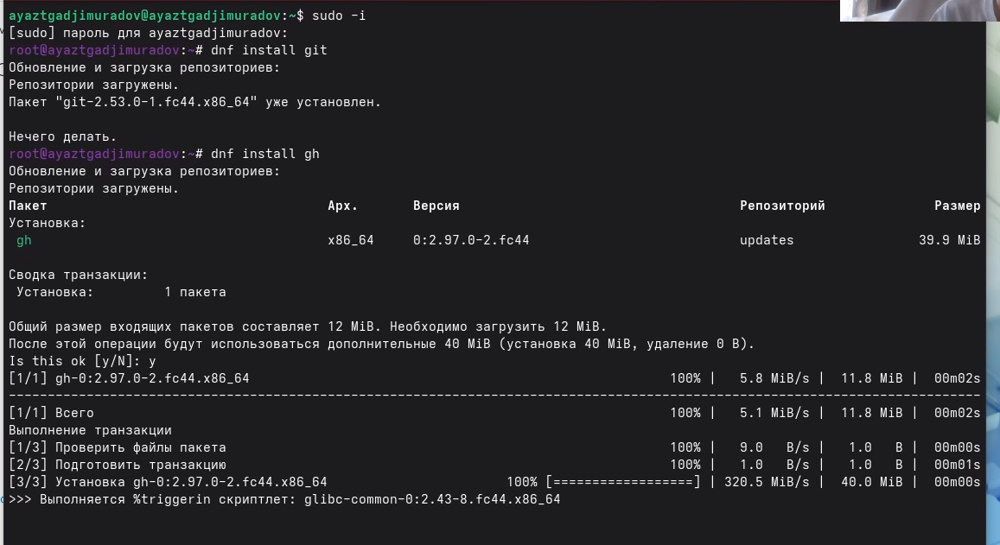
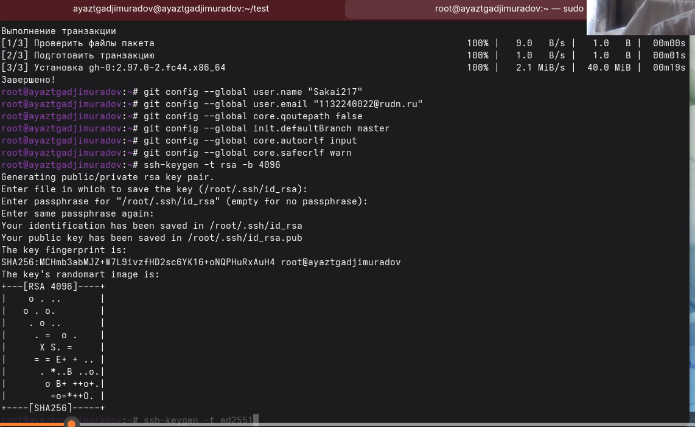
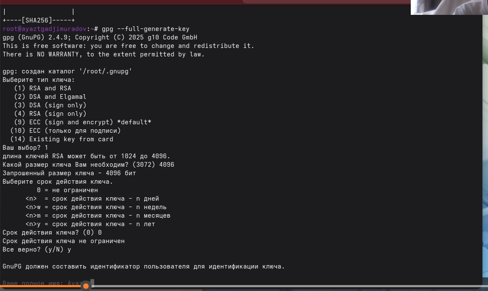
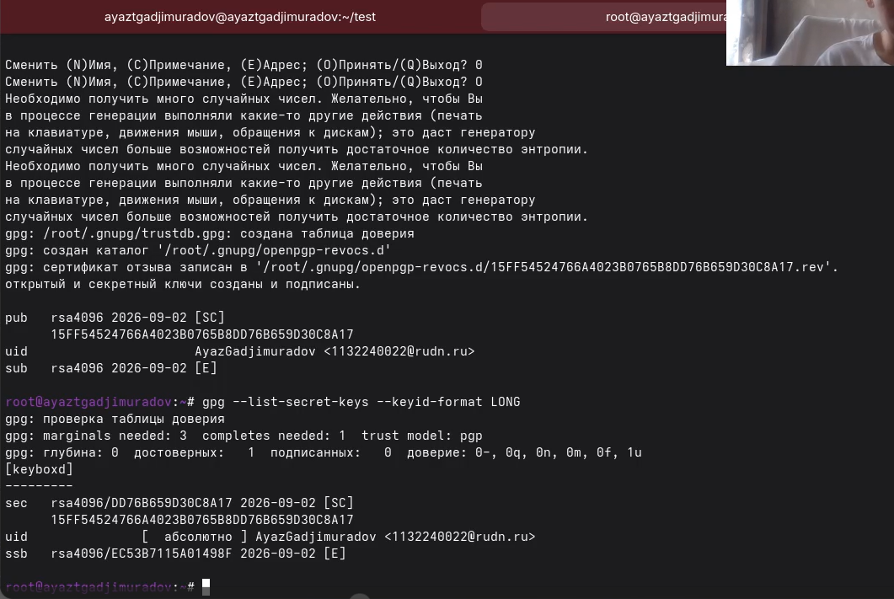
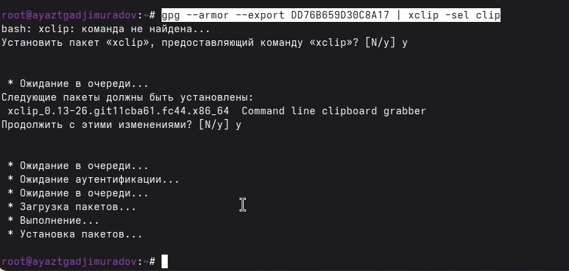
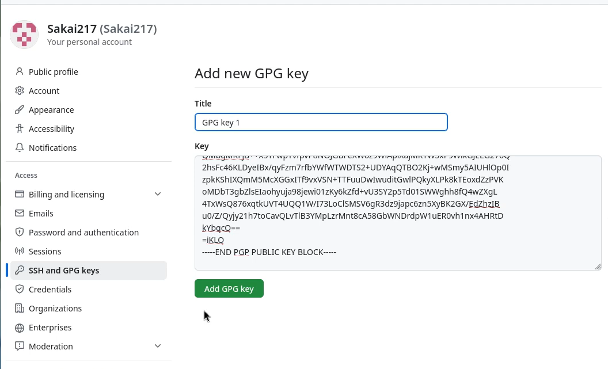

Изучить идеологию и применение средств контроля версий. Освоить умения по работе с git.
Установка git
Установим git:
dnf install gitУстановка gh Fedora: dnf install gh

по алгоритму rsa с ключём размером 4096 бит:
ssh-keygen -t rsa -b 4096
по алгоритму ed25519:
ssh-keygen -t ed25519
Генерируем ключ
gpg --full-generate-key
Выводим список ключей и копируем отпечаток приватного ключа: gpg –list-secret-keys –keyid-format LONG

Отпечаток ключа — это последовательность байтов, используемая для идентификации более длинного, по сравнению с самим отпечатком ключа.Формат строки: sec Алгоритм/Отпечаток_ключа Дата_создания [Флаги]
[Годен_до] ID_ключа Cкопируйте ваш сгенерированный PGP ключ в буфер
обмена: gpg –armor –export

Перейдите в настройки GitHub (https://github.com/settings/keys), нажмите на кнопку New GPG key и вставьте полученный ключ в поле ввода.

Спасибо за внимание!